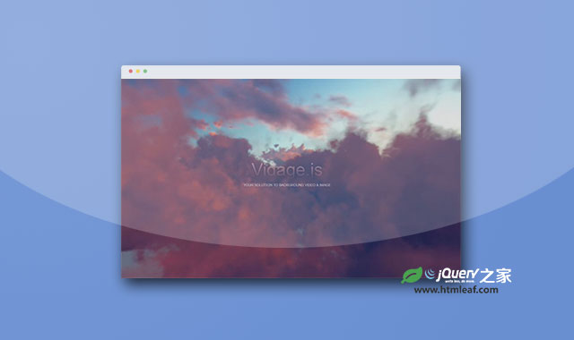
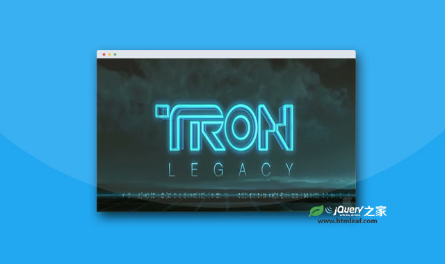

html5视频背景插件vidbacking
A jQuery plugin to create HTML5 video as background on webpage with fallback image support
jQuery之家
返回下载页
Vidbacking Demo of <div> Background
Run video on using jquery.vidbacking.js.
div区域视频背景
全屏视频背景
如果你喜欢这个插件，那么你可能也喜欢:

移动友好的HTML5全屏背景视频特效插件

HTML5超酷响应式视频背景动画特效